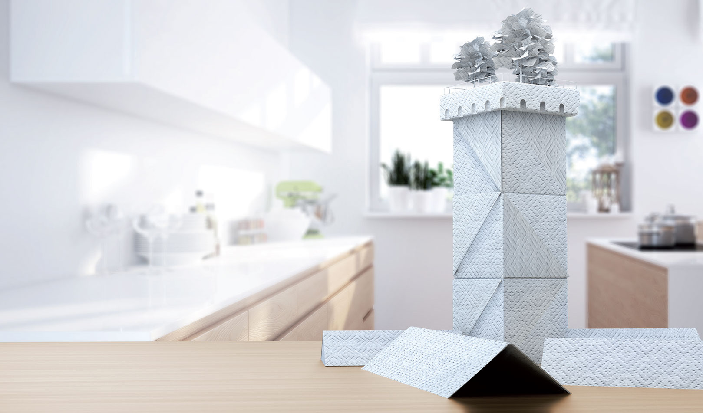
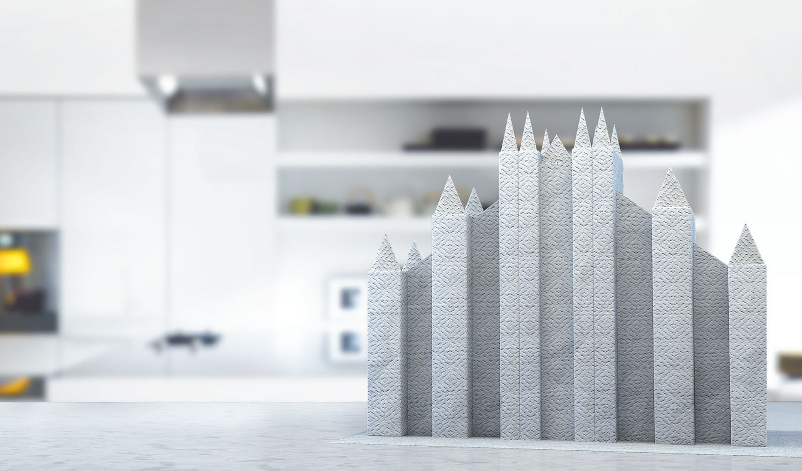
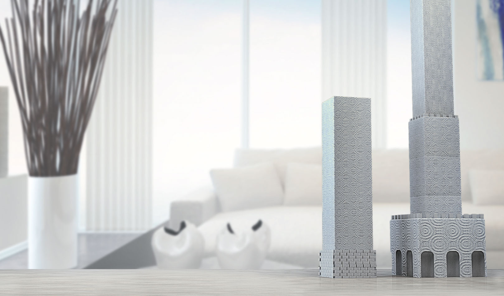
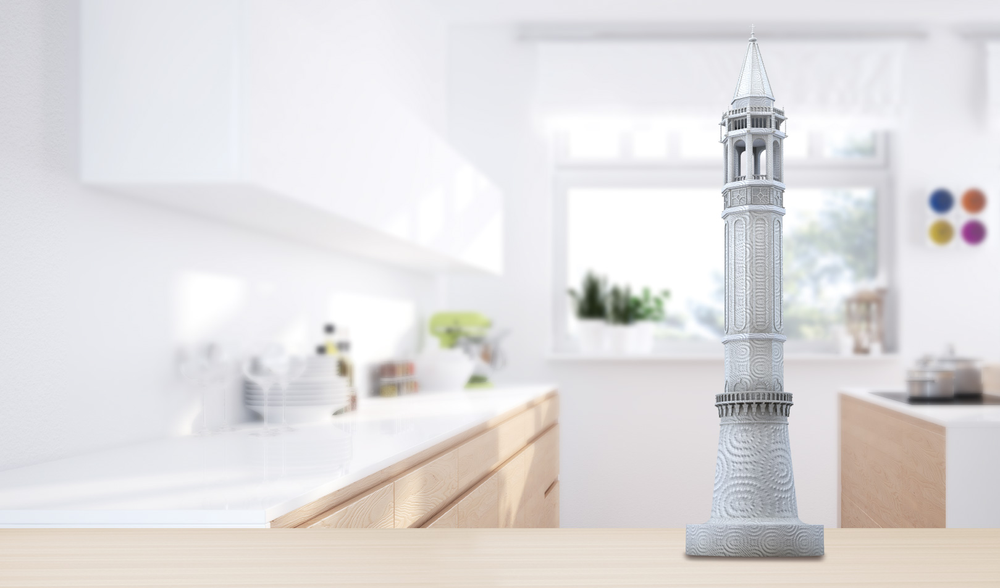
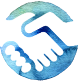
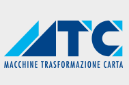
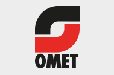
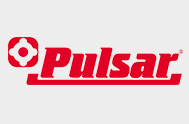
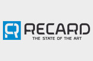

<!doctype html>
<html lang="en">
<head>
	<meta charset="UTF-8" />
	<title>iT's tissue</title>
	<meta name="description" content="Tissue Italy è un Evento unico al mondo, un’immersione totale nella tecnologia made in Italy dedicata agli impianti per la produzione di tutta la gamma dei prodotti tissue per uso igienico e sanitario.">
    <meta name="viewport" content="width=device-width, initial-scale=1, maximum-scale=1">
	
	<link rel="stylesheet" href="../assets/css/reset.css" />
	<!-- Owl Carousel ../assets -->
    <link href="../assets/css/owl.carousel.css" rel="stylesheet">
    <link href="../assets/css/owl.theme.css" rel="stylesheet">
	<link rel="stylesheet" href="../assets/css/style.css" />
	<link rel="stylesheet" href="../assets/css/responsive.css" />
	<link rel="stylesheet" href="../assets/superslides/dist/stylesheets/superslides.css">
	 
	 <script src="../assets/js/modernizr.custom.35658.js"></script> 
	 <script src="../assets/script/ga.js"></script>  
     
     <script>
  (function(i,s,o,g,r,a,m){i['GoogleAnalyticsObject']=r;i[r]=i[r]||function(){
  (i[r].q=i[r].q||[]).push(arguments)},i[r].l=1*new Date();a=s.createElement(o),
  m=s.getElementsByTagName(o)[0];a.async=1;a.src=g;m.parentNode.insertBefore(a,m)
  })(window,document,'script','//www.google-analytics.com/analytics.js','ga');
 
  ga('create', 'UA-56721686-1', 'auto');
  ga('send', 'pageview');
 
</script>
	 
</head>

</html>

<body>
<div class="lang-menu">
<div class="container">
<ul class="lang-flags">
<li class="btn"><a href="#contatti">contacts</a></li>
<li>seleziona lingua: </li>
	<li class="active"></li>
	<li><a href="../"></a></li>
</ul>
</div>
</div>
<ul id="mobile-menu">
          <li><div class="table"><div class="cell"><a class="item" href="#about">Qué es <br>It’s Tissue</a></div></div></li>
          <li><div class="table"><div class="cell"><a class="item" href="#network">LAS EMPRESAS<br>DE LA RED</a></div></div></li>
          <li><div class="table"><div class="cell"><a class="item" href="#edition" >Edición<br>2013</a></div></div></li>
          <li><div class="table"><div class="cell"><a class="item" href="#technology">Por qué no se<br>lo puede perder</a></div></div></li>
          <li><div class="table"><div class="cell"><a class="item" href="#sponsor">Hágase<br>patrocinador</a></div></div></li>
          <li><div class="table"><div class="cell"><a class="item" href="#news">Media &amp; News</a></div></div></li>
          <li class="alwaysactive"><div class="table"><div class="cell"><a href="http://preregistration.itstissue.com/" target="_blank">Reserve el tour</a></div></div></li>
          <li></li>
        </ul>


	<header id="carousel">
	
<!--
<div class="slidecaption">


		

	</div>
-->

	
	<div id="slides">
	
	<div class="black-overlay">
		<div class="slidecaption">


		

	</div>
	</div>
  <div class="slides-container">
  
    <li>
	    
    </li>
    <li></li>
    <li></li>
    <li></li>
    <li></li>
    <li></li>
    <li></li>
    <li></li>
  </div>
</div>
		<nav id="top-menu" class="no-sticky">
	 <div class="top-menu-inner-mobile">
		  <div class="menu-logo"><a href="#"></a></div>
		  <div class="menu-lines"><a href="#"></a>
		           </div>
	 </div>
    <div class="top-menu-inner">
      <div class="menu-logo"><a href="#"></a></div>

        <ul>
          <li class="item"><a href="#about">Qué es <br>It’s Tissue</a></li>
          <li class="item"><a href="#network">LAS EMPRESAS<br>DE LA RED</a></li>
          <li class="item"><a href="#edition" >Edición<br>2013</a></li>
          <li class="item"><a href="#technology">Por qué no se<br>lo puede perder</a></li>
          <li class="item"><a href="#sponsor">Hágase<br>patrocinador</a></li>
          <li class="item"><a href="#news">Media &amp; News</a></li>
          <li class="alwaysactive"><a href="http://preregistration.itstissue.com/" target="_blank">Reserve el tour</a></li>

        </ul>

    </div>
  </nav>
	</header>
	
	<section id="intro">
	<div class="container">
		<article class="col one-half">
			<h1>21-28 de junio de 2015 <span class="subtitle">en Lucca, Bolonia, Reggio Emilia y Lecco</span></h1>
			<p>
Lucca será el corazón del evento. Esta maravillosa ciudad representa la unión entre el mundo antiguo y el tecnológico dedicado al papel. Su encanto es el protagonista de este vídeo realizado para la ocasión.
"iT's tissue" es un evento sin igual en el mundo. ¡Una cita que no se puede perder!
</p>
<p><strong>Próximamente on line el programa completo del evento.</strong></p>
		</article>
		<div class="col one-half video">
			<iframe width="560" height="315" src="https://www.youtube.com/embed/ZaoBDL93nj4?rel=0&showinfo=0" frameborder="0" allowfullscreen></iframe>
		</div>
	</div>
	</section>
	
	<section id="about">
		<div class="container">
		<header class="col full-width"><h1 class="hidden">Qué es "iT's tissue"</h1></header>
		<div class="col full-width"></div>
		<article class="col one-half hidden">
			<p><strong>“iT’s tissue”</strong> - The Italian Technology Experience, <strong>es un evento único en el mundo, una inmersión total en la tecnología “Made in Italy” dedicada a las instalaciones para la producción de toda la gama de productos de papel para uso higiénico y sanitario.</strong></p>
			<p>Se desarrollará del 21 al 28 de junio de 2015 en Lucca, más conocida como el "Tissue Valley", que será el corazón del evento, y de manera simultánea en el "Packaging Valley" en Bolonia, Reggio Emilia y Lecco.</p>
			<p> “iT’s tissue” surge para ofrecer a profesionales de todo el mundo, de este y otros sectores, la posibilidad de descubrir la mejor tecnología “Made in Italy” para la fabricación, el envasado y la manipulación de productos de papel: como papel higiénico, rollos de cocina, toallitas faciales, servilletas, pañuelos, rollos y productos plisados para los sectores de consumo y profesional.</p>
		</article>
		<article class="col one-half hidden">
			<p>Un viaje de una semana por 12 empresas líderes del sector que abren las puertas de sus fábricas para mostrar en directo sus "criaturas tecnológicas".
Las 12 empresas que forman parte de la Red son: A. Celli; Elettric 80; Fabio Perini; Futura; Gambini; MTC; Omet; PCMC; Pulsar; Recard; TMC; Toscotec.
</p>
<p>Solo en "iT's tissue" se pueden escuchar, tocar y ver en directo las mejores soluciones tecnológicas para el papel y al mismo tiempo vivir una exclusiva experiencia cultural y enogastronómica en la maravillosa Italia.</p>
			<p><strong> "iT's tissue" es un evento sin igual en el mundo. ¡Una cita que no se puede perder!</strong></p>

		</article>
		<div class="col full-width"><a href="http://preregistration.itstissue.com/" target="_blank" class="prereg_btn">Reserve el tour</a></div>
		<div class="col full-width"></div>
		<div class="col one-third center">
		
		<h2 class="hidden">Red</h2>
		<p class="hidden">Tissue Italy es una Red, una forma innovadora de cooperar que se adapta a las necesidades de empresas diferentes entre ellas.
Permite la colaboración en el respeto de los objetivos comunes sin sacrificar la propia autonomía. El objetivo es el de organizar un evento único en la industria del papel llamado: "iT's tissue".</p>
		</div>
		<div class="col one-third center">
		
			<h2 class="hidden">Misión</h2>
		<p class="hidden">"iT's tissue" tiene el objetivo de poner en contacto a empresas y a operadores del sector para hacer conocer la excelencia italiana, y difundir su valor basado en tecnologías de vanguardia, personas entregadas y con mucha experiencia, saber hacer e innovación.</p>
		</div>
		<div class="col one-third center">
		
			<h2 class="hidden">Código ético</h2>
		<p class="hidden">Para garantizar la transparencia y la honestidad en relación a todo el mercado, las empresas de la red han firmado un Código Ético que resalta los valores comunes sobre los que se basa la iniciativa.</p>
		</div>
		</div>
	</section>

	
	<section id="network">
		<header class="col full-width"><h1 class="hidden">Tissue en 360°</h1></header>
<div class="col full-width">
	
</div>

<header class="col full-width"><h1 class="hidden">LAS EMPRESAS DE LA RED</h1></header>

<div id='scheda-cont-wrapper'></div>

<div class="container">
<ul class="nav-loghi">
<li><a href="acelli.html"></a></li>
<li><a href="elettric80.html"></a></li>
<li><a href="fabio-perini.html"></a></li>
<li><a href="futura.html"></a></li>
<li><a href="gambini.html"></a></li>
<li><a href="mtc.html"></a></li>
<li><a href="omet.html"></a></li>
<li><a href="pcmc.html"></a></li>
<li><a href="pulsar.html"></a></li>
<li><a href="recard.html"></a></li>
<li><a href="tmc.html"></a></li>
<li><a href="toscotec.html"></a></li>
	
</ul>

</div>
	</section>
	
	
	
<section id="edition">
<div class="container">
	<div class="col full-width center">
		<h1 class="hidden">Edición 2013</h1>
		<h3 class="hidden">La primera edición de "iT's tissue" se desarrolló en Lucca, Bolonia, Reggio Emilia y Lecco, del 22 al 30 de junio de 2013 y tuvo la excepcional participación de más de 700 operadores del sector provenientes de más de 70 países.


</h3>

<!-- <p class="hidden">Grazie alla sua formula innovativa che ha permesso un viaggio alla scoperta del “distretto della carta” più importante d’italia  il Presidente del Repubblica Giorgio Napolitano, ha conferito la Medaglia all’eccellenza per il valore riconosciuto.</p> -->

	</div>
	
	
</div>
</section>	
	
<section id="technology">
	<div class="container">
	<div class="col full-width center">
	<h1 class=" hidden">Por qué no se lo puede perder</h1>
		<h3 class=" hidden"> <strong>En el panorama de las citas internacionales, "iT's tissue"   representa un evento único en el mundo.</strong> Solo en "iT's tissue" se pueden ver en directo y en funcionamiento las soluciones tecnológicas más innovadoras para el papel.</h3>
	
    <map name="Map" id="Map">
     <area shape="rect" coords="557,44,882,137" href="http://preregistration.itstissue.com/" target="_blank" />
    </map>
	</div>
	</div>
</section>	


<section id="sponsor">
<div class="container">
	<div class="col full-width center">
	<h1 class="hidden">Hágase patrocinador</h1>
		<p class="hidden">Déle visibilidad a su empresa, ¡hágase patrocinador de "iT's tissue"!
Participe en "iT's tissue" con las 12 empresas de la Red para conseguir que su empresa se conozca en todo el mundo.

</p>

<p class="hidden">Descubra los recursos de comunicación dedicados a los patrocinadores</p>
<a href="../assets/downloads/sponsor_kit_eng.pdf" class="prereg_btn" target="_blank">Descargue la información para hacerse patrocinador</a>
	</div>
	</div>
</section>

<section id="news">
	<div class="container">
	<div class="col full-width center">
	<h1 class="hidden">Media & News</h1>
	</div>
	</div>
	<div class="container timeline">
	<div class="col full-width center bollo">2016</div>
		<article class="col one-half news-cont left hidden">
			<div class="press-left-box1-inner">
            <div class="date">
            <div class="table"><div class="cell">
             <h2>21</h2> <h2> - </h2> <h2>28</h2>
             <h3>giugno<br>2015</h3>
            </div></div>
             </div>
            <div class="cont">
            <div class="table"><div class="cell">
             <h1>It’s Tissue 2015</h1>
             <p>A breve il programma completo dell'evento.</p>
              </div></div>
            </div>
          </div>
		</article>
		<article class="col one-half news-cont right hidden">
			<div class="press-right-box1-inner">
            <div class="date">
            <div class="table"><div class="cell">
             <h2>17</h2> <h2> - </h2> <h2>19</h2>
             <h3>marzo<br>2015</h3>
            </div></div>
             </div>
            <div class="cont">
            <div class="table"><div class="cell">
             <h1>IT’s tissue al Barcellona Tissue World</h1>
              </div></div>
            </div>

		</article>
		<div class="col full-width center bollo">2015</div>
		<!--
<article class="col one-half news-cont left empty hidden"></article>
		<article class="col one-half news-cont right empty hidden"></article>
		<div class="col full-width center bollo">2014</div>
-->
		
		<article class="col one-half news-cont left empty hidden">
					</article>
		<article class="col one-half news-cont right hidden">
			<div class="press-right-box1-inner">
            <div class="date">
            <div class="table"><div class="cell">
             <h2>30</h2>
             <h3>settembre<br>2013</h3>
            </div></div>
             </div>
            <div class="cont">
            <div class="table"><div class="cell">
             <h1>Il nuovo sito è online</h1>
              </div></div>
            </div>
            
			</div>
		</article>
		
		<article class="col one-half news-cont left hidden">
			<div class="press-left-box1-inner">
            <div class="date">
            <div class="table"><div class="cell">
             <h2>08</h2> <h2> - </h2> <h2>31</h2>
             <h3>ottobre<br>2012</h3>
            </div></div>
             </div>
            <div class="cont">
            <div class="table"><div class="cell">
             <h1>It’s World Tour 2013</h1>
              </div></div>
            </div>
            <a class="press-link aleft" href="../assets/downloads/WORLD_TOUR_IT'S_TISSUE.pdf" target="_blank">press release ></a>
          </div>
          
		</article>
		<article class="col one-half news-cont right hidden">
			<div class="press-right-box1-inner">
            <div class="date">
            <div class="table"><div class="cell">
             <h2>22</h2> <h2> - </h2> <h2>28</h2>
             <h3>giugno<br>2012</h3>
            </div></div>
             </div>
            <div class="cont">
            <div class="table"><div class="cell">
             <h1>It’s Tissue 2013</h1>
              </div></div>
            </div>
            <a class="press-link aright" href="../assets/downloads/PRESS_RELEASE_2013edition.pdf" target="_blank">press release ></a>
			</div>
			
		</article>
		<div class="col full-width center bollo">2013</div>

	</div>
</section>

<section id="contatti">

	<div class="col full-width center">
	<h1 class="hidden">Contatti</h1>
	<h3>Tissue Italy c/o Assindustria Piazza Bernardini 41, 55100 Lucca</h3>

	</div>
	<div class="container">
	<p><strong>Per ulteriori informazioni e richieste</strong><br><a href="mailto:info@itstissue.com">info@itstissue.com</a></p>
	<p><strong>Per ufficio stampa</strong><br><a href="mailto:press@itstissue.com">press@itstissue.com</a></p>
	<p><strong>Per  registrarsi all’evento  “its tissue 2015”</strong><br><a href="mailto:registration@itstissue.com">registration@itstissue.com</a></p>
	</div>
</section>
	
	<footer>
		<div class="container">
			<div class="logofooter">
				
			</div>
			<div class="copy">
				<div class="table"><div class="cell">
				Copyright © IT'S Tissue 2015 - All rights reserved.
				<!--
<ul class="lang">
					<li class="active"></li>
					<li><a href="../"></a></li>
				</ul>
-->
				</div></div>
			</div>
		</div>
	</footer>
	
<script src="http://code.jquery.com/jquery-1.11.0.min.js"></script>
<script src="../assets/js/jquery.easing.1.3.js"></script>
  <script src="../assets/js/jquery.animate-enhanced.min.js"></script>
  <script src="../assets/js/hammer.min.js"></script>
  <script src="../assets/superslides/dist/jquery.superslides.js" type="text/javascript" charset="utf-8"></script>
  <script src="../assets/js/application.js"></script>
   <script src="../assets/js/owl.carousel.js"></script>
   
<script src="../assets/script/min/script-min.js"></script>

<script>
    $('#slides').superslides({
      animation: 'fade',
      pagination: false,
      play: 4000
    });
  </script>

</body>